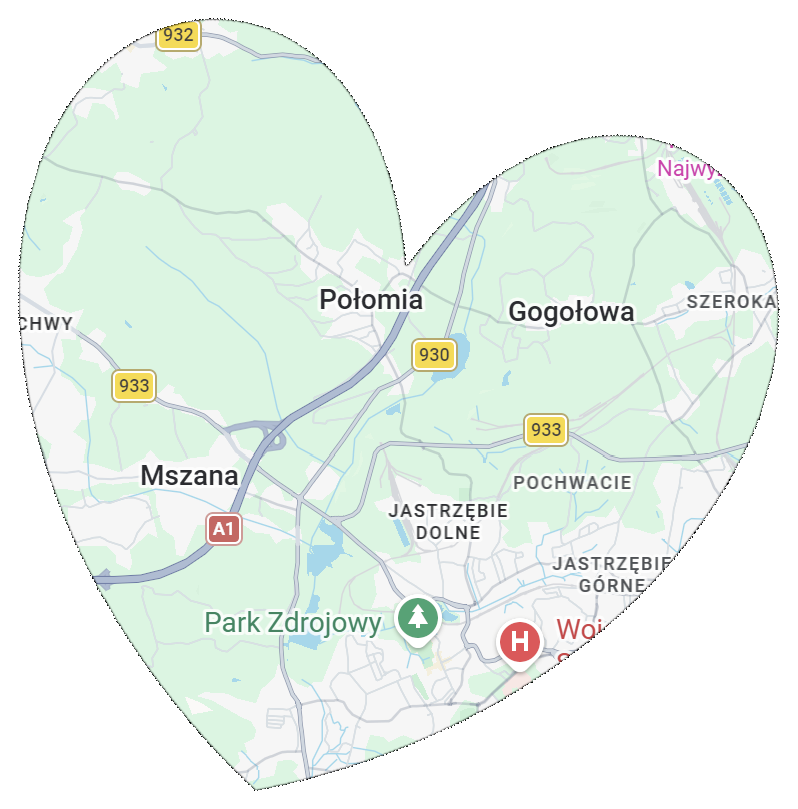

Blisko mieszkańców. Mszana · Połomia · Gogołowa
Jesteśmy lokalną, oddolną inicjatywą mieszkańców. Udostępniamy materiały i źródła,
pomagamy i łączymy sąsiadów —
bez polityki i bez hejtu, dążąc do wskazywania źródła każdej informacji wymagającej potwierdzenia.
Niezależny głos mieszkańców Mszana.info.
Inicjatywa Mszana.info powstała z potrzeby wzmocnienia społeczeństwa obywatelskiego, budowy więzi sąsiedzkich oraz rzetelnego informowania mieszkańców o sprawach naszej gminy. Nie jest naszym celem bezpodstawna krytyka, lecz merytoryczna dyskusja nad rozwojem Mszany, Połomi i Gogołowej.

Nasza wspólnota
Trzy sołectwa — jedno serce
Mszana, Połomia i Gogołowa to miejsca, których sprawy są dla nas najbliższe.
Łączy nas codzienność: sąsiedztwo, lokalne sprawy i troska o wspólną przestrzeń. Dlatego Mszana.info jest miejscem rzetelnej informacji, rozmowy i wzajemnego wsparcia mieszkańców całej gminy.
- Mszanasiedziba gminy
- Połomiaczęść naszej lokalnej wspólnoty
- Gogołowaczęść naszej lokalnej wspólnoty
Widok ma charakter symboliczny i orientacyjny — nie przedstawia dokładnych granic administracyjnych.
Podkład mapowy: © OpenStreetMap contributors (ODbL).
O nas
Blisko mieszkańców. Mszana · Połomia · Gogołowa
Jesteśmy sąsiadami, którzy chcą wiedzieć, co dzieje się w naszej gminie — i dzielić się tym rzetelnie.
Niezależny głos mieszkańców
Niezależny głos mieszkańców Mszana.info
Nie reprezentujemy żadnej partii, urzędu ani listy wyborczej. Działamy z myślą o mieszkańcach Mszany, Połomi i Gogołowej. Materiały udostępniamy ze wskazaniem autora albo źródła, gdy jest ono dostępne.
Kto administruje stroną
Administracja portalu Mszana.info – osoby fizyczne zapewniające techniczną i organizacyjną obsługę Serwisu. Administracja przyjmuje materiały, sprawdza ich zgodność z Regulaminem i może uzgodnić z Autorem techniczną formę ich udostępnienia. Nie prowadzi stałego planu własnych publikacji ani nie tworzy materiałów w imieniu Autorów.
Kontakt z administratorem: [email protected] (klauzula informacyjna RODO dostępna po kliknięciu adresu w lewym górnym rogu strony).
Nasze zasady
Piszemy kulturalnie i rzeczowo. Przy liczbach i zarzutach podajemy źródło. Krytykujemy decyzje, nie ludzi. Sprostowanie jest u nas mile widziane — pomyłka zdarza się każdemu, zatajanie jej nie.
Funkcje informacyjne
Jak działamy — trzy proste filary
Strona łączy funkcje informacyjne, pomocowe i obywatelskie. Tak wygląda to w praktyce.
1. Informacja oparta na źródle
Nie streszczamy urzędowych dokumentów „po swojemu”. Tam, gdzie to możliwe, kierujemy bezpośrednio do oficjalnego źródła: portalu eSesja (posiedzenia, transmisje, głosowania, rejestr uchwał, interpelacje) oraz do BIP i protokołów.
2. Głos społeczny i jawność
Wzywamy do jawności, publikowania dokumentów i otwartej dyskusji o inwestycjach. W dyskusji obowiązuje jedna zasada: oceniamy działania, nie ludzi.